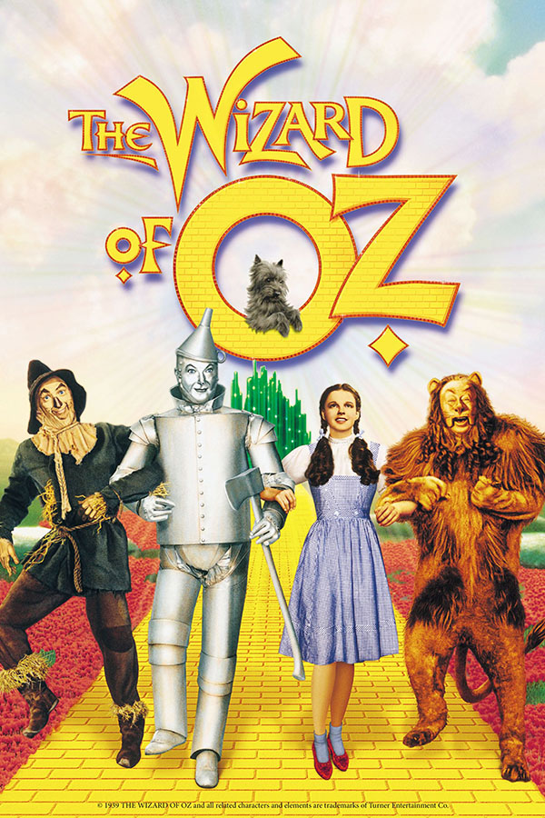
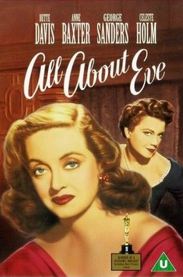
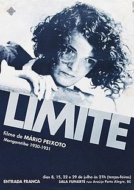

O Meu Ranking Pessoal: A Locadora de Filmes Favoritos
Role para ver os 5 filmes e clique nas opções "Emprestar" ou "Vender" para simular a transação.
#1. O Mágico de Oz (1939)
1º LugarDorothy, uma jovem do Kansas, é levada por um tornado à mágica terra de Oz. Lá, ela embarca numa jornada para encontrar o caminho de volta para casa, acompanhada por amigos encantadores e enfrentando desafios mágicos.
Disponível para locação.
#2. A Malvada (1950)
2º LugarNos bastidores da Broadway, a estrela Margo Channing vê sua carreira ameaçada por Eve, uma jovem aparentemente inocente que se revela ambiciosa e manipuladora. Um drama sobre fama, rivalidade e decadência.
Disponível para locação.
#3. Limite (1930)
3º LugarConsiderado o maior filme brasileiro de todos os tempos, este drama mudo e poético acompanha três náufragos em um barco, explorando temas de angústia, liberdade e memória por meio de imagens intensamente simbólicas.
Disponível para locação.
#4. Stalker (1979)
4º LugarEm um futuro incerto, um guia conhecido como “Stalker” leva dois homens a uma misteriosa Zona onde desejos podem se realizar. O filme mistura ficção científica e filosofia, explorando os limites da fé e da razão.

Disponível para locação.
#5. Túmulo dos Vagalumes (1988)
5º LugarDurante a Segunda Guerra Mundial, dois irmãos japoneses lutam para sobreviver após perderem os pais. Uma animação comovente do Studio Ghibli que retrata a dor da guerra sob o olhar infantil.
Disponível para locação.